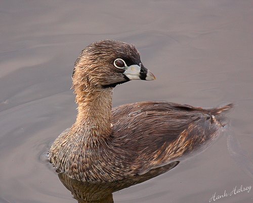

Pied-billed Grebe

¡Descubre al simpático Pied-billed Grebe!
- ¡Bienvenido a las Islas Galápagos, hogar de aves fascinantes como el Pied-billed Grebe!
- ¿Sabías que los Pied-billed Grebes son aves acuáticas que parecen pequeñas pelotas de plumas flotando en el agua? ¡Muy divertidas de observar! 🌊🐦
- Su nombre científico es Podilymbus podiceps, pero puedes llamarlos "Pied-billed Grebes". ¡Su pico ancho y corto es su característica más distintiva!
- Estos simpáticos pájaros a veces visitan las Islas Galápagos durante sus viajes. ¡Quizás tengas suerte y los veas en alguna de tus excursiones!
- Recuerda siempre mantener una distancia respetuosa y no molestar a estas adorables aves. ¡Disfruta explorando las islas!
¡Descubre al Pied-billed Grebe!
- ¡Bienvenido a las Islas Galápagos, donde la diversidad de aves maravillosas incluye al encantador Pied-billed Grebe!
- Nombre Científico: Podilymbus podiceps
- ¿Sabías que los Pied-billed Grebes tienen un pico peculiarmente grueso y corto? Es su distintiva "etiqueta de identificación".
- Estado de Conservación: Varía según la región, pero generalmente de preocupación menor.
- ¿Dónde verlos? Aunque no son nativos de Galápagos, a veces visitan estas islas durante sus desplazamientos. Puedes encontrarlos en cuerpos de agua cercanos.
- ¡Curiosidad turística! Los Pied-billed Grebes son excelentes nadadores y pueden sumergirse completamente bajo el agua para buscar comida. ¡Una vista sorprendente!
- Recuerda respetar el entorno natural y mantener una distancia segura para no interferir con sus actividades cotidianas. ¡Buen viaje!
Información para biólogos:
- Nombre Científico: Podilymbus podiceps
- Estado de Conservación: Varía, pero generalmente de preocupación menor
- Distribución Geográfica: Amplia distribución en América, ocasional en Galápagos
- Descubrimiento y Nomenclatura: Proviene de la palabra latina "podex" que significa "trasero" y "limbus" que significa "borde". Nombre científico atribuido a diferentes naturalistas.
- Hábitat: Agua dulce, lagos, estanques, a veces en zonas costeras
- Origen: No nativo de Galápagos, ocasionalmente avistado durante migraciones
- Presencia en el Hábitat: Variable, depende de la temporada y disponibilidad de hábitats acuáticos
- Dieta: Principalmente carnívoro, se alimenta de peces, insectos y pequeños vertebrados acuáticos
- Peso: Alrededor de 400-600 gramos
- Comportamiento Reproductivo: Construye nidos flotantes en el agua, donde la hembra pone varios huevos
- Adaptaciones: Plumaje denso y capacidad para sumergirse bajo el agua
- Interacciones con Ecosistema: Contribuye al control de poblaciones de peces y otros organismos acuáticos
- Nombres Relacionados: No hay nombres étnicos específicos